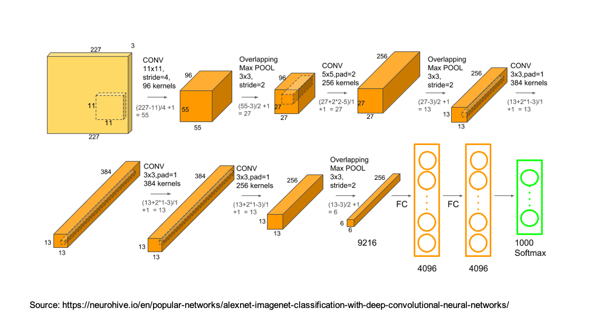
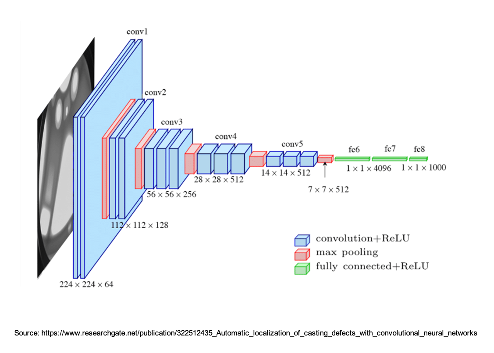
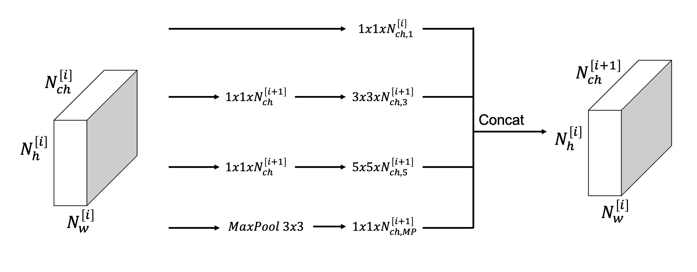
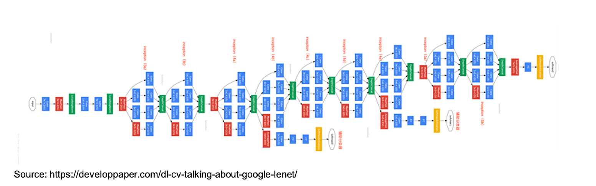
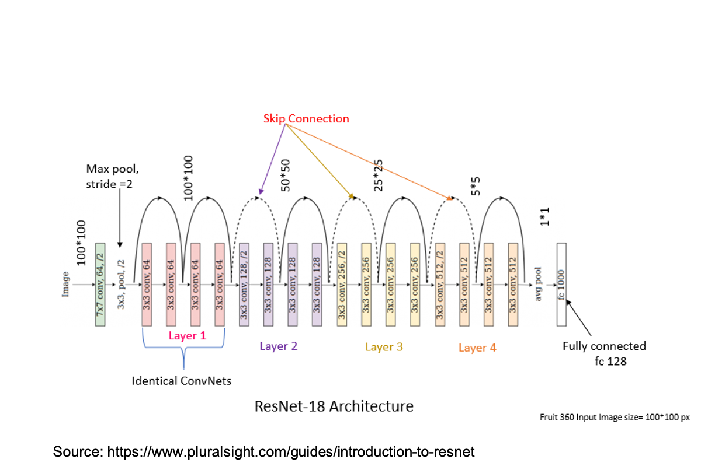
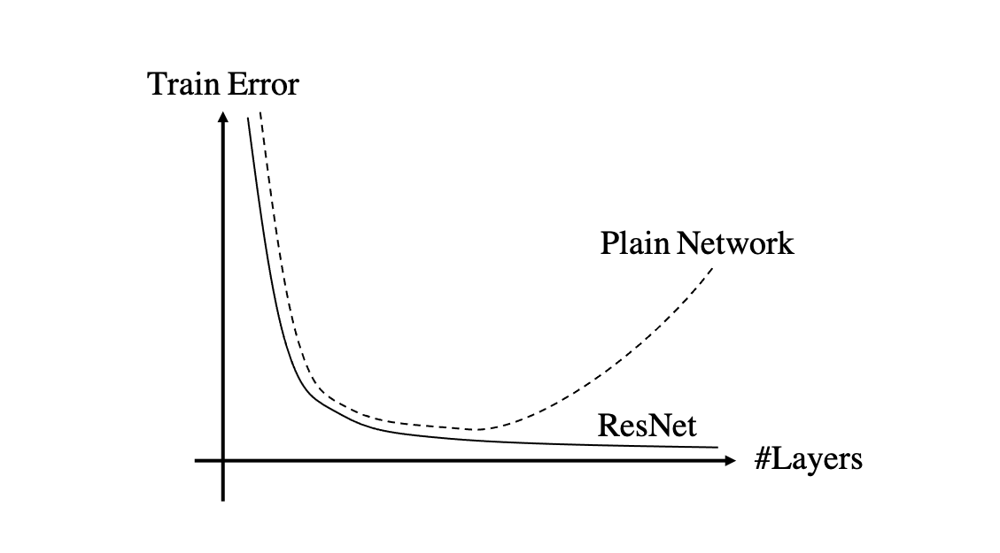
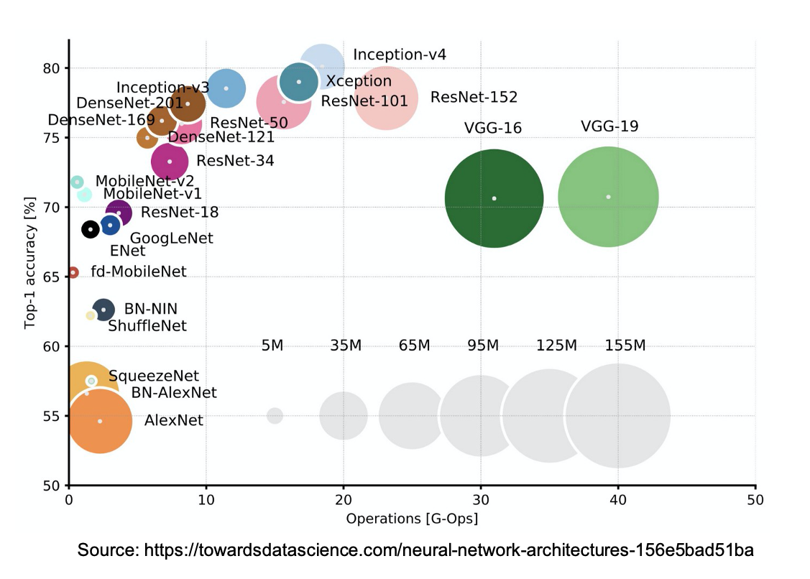

CNNs Popular Architectures
This lecture provides an overview of how deep learning, especially in the context of CNNs (and computer vision in general), has evolved over the last decade. This is something that it is good to be familiar with because:
- whilst most of these advances are given for granted and routinely used today, it is always insightful to learn how ans why these developments were made;
- we can use architectures that worked well with no (or minimal) adaptation to our problem at hand (we will see that this is very commonly done with high degree of success in geoscience);
- even better, sometimes we can decide to use pre-trained networks and fine-tune them with limited amount of label data. In this case knowing the network architecture in details allows us to make informed choices, such as remove some of the final layers and introduce new ones that better adapt to the problem at hand (e.g., different number of classes).
LeNet-5
One of the first successful CNNs was created and trained by the famous Yan Le Cun in 1989 with the objective of classifying hand-written digits. As we will see when comparing this to other popular networks, the size of LeNet-5 is very limited, mostly due to the hardware capabilities at that time (and the availability of a fairly small training dataset).
As shown in the figure below, this network is composed of:
- 2 convolutional layers with filter size equal to $5 \times \(5\), stride equal to 1, and number of channels equal to 6 and 16, respectively;
- 2 average pooling layers that reduce the height and width of the feature maps by a factor of 2;
- 3 fully connected layers of size 120, 84, and 10 (the number of digits to classify);
- softmax activation in the final layer;
and the overall number of training parameters is \(\approx 60k\). Finally, looking at the network architecture two things stand out that probably today would have been implemented differently:
- average pool layers are not so popular today, max pool layers are more commonly used;
- activations were used also after pooling and all activations where sigmoid/tangent. Again, today ReLU or one of its variant is more commonly used and no activations are added after pooling layers.

AlexNet
AlexNet represents a milestone in the field of DeepLearning. Developed by Alex Krizhevsky, Ilya Sutskever and Geoffrey Hinton, this network was the first CNN that won the popular computer vision competition ImageNet. Not only that, but the network outperformed other submissions by far, and brought Deep Learning to the attention of the larger Computer Vision community.
As shown in the figure below, this network is not very different from LeNet-5 in its individual components, it is however much deeper and contains much more trainable parameters. More specifically, it is composed of:
- 5 convolutional layers with variable filter size (ranging from \(11 \times 11\) in the first layer all the way to \(3 \times 3\) in some of the deeper layers);
- 3 max pooling layers that reduce the height and width of the feature maps by a factor of 2;
- 3 fully connected layers of size 4096, 4096, and 1000 (the number of digits to classify);
- softmax activation in the final layer;
and the overall number of training parameters is \(\approx 60M\), 3 order of magnitude more than that of LeNet-5. A number of interesting feature of this network:
- the number of channels in the different layers: initially, this grows from 3 (i.e., RGB) to 384 and it is then reduced to 256 all the way to the FC layer;
- ReLU is used as activation function for all hidden layers;
- Dropout is used to avoid overfitting;

VGG-16
In 2015, the Visual Geometry Group at Oxford introduce a new CNN architecture called VGG. The key architectural change here is the fact that the network was much deeper than most state-of-the art networks at that time (16 layers); this was achieved by trading filter size (now \(3 \times 3\)) for depth. Moreover, whilst other networks like AlexNet were hand-crafted with very different filter sizes, strides and padding from layer to layer, this network is really very simple to define:
- 16 \(3 \times 3\) convolutional layers with stride equal to 1;
- 16 max pooling laywrs with filter size and stride equal to 2.
and the overall number of training parameters is \(\approx 138M\), roughly twice more than those of AlexNet.
The key insight of VGG, which we will see is also used in later CNN architectures, is that stacks of convolutional layers with small filters can emulate the receptive field of one layer with larger filter sizes. Note that further extensions of VGG-16 have been proposed, for example VGG-19 where the network is composed of 19 layers.

GoogleLeNet and Inception
In 2014, Christian Szegedy from Google was working on reducing the computational burden of deep neural networks. At that time, a new convolutional block was introduced under the name of Inception Layer:

Instead of choosing the size of the bank of filters to be used upfront, the inception layer uses more than once filter size at the same time (a kind of multi-resolution approach). More specifically the input is sent into 4 paths in parallel:
- \(1 \times 1\) convolution block;
- \(3 \times 3\) convolution block;
- \(5 \times 5\) convolution block;
- Max pooling block.
Moreover, since sending an input with large width, height, and channel number into a \(3 \times 3\) (or \(5 \times 5\)) convolutional layer would result in a very large number of trainable parameters and extreme computational cost, the input is first sent into a \(1 \times 1\) that reduces the channel size and then the channel size is increased again in the next layer. The \(1 \times 1\) layers act as a bottleneck layer keeping the number of trainable parameters low. Similarly, after the max pooling layer the number of channels is controlled via another \(1 \times 1\) convolutional layer. The four outputs are simply concatenated together to form the output of the Inception layer.
The GoogleLeNet network is a large networks where multiple of these Inception layers are stacked together. This network presents an additional set of new features:
- two side branches are added at different stages of the network, where intermediate representations from hidden layers are passed through a few more layers and sent to a classifier. These classifiers perform the same task of the main classifier placed at the end of the network and have been shown to act as a natural regularizer, ensuring that the hidden features are as expressive as possible to the point they can be used directly for the classification task at hand.

ResNet
We can already observe a trend moving from LeNet-5 to VGG-19. From the 80' all the way to the early 2000', networks started to become deeper and deeper. However, despite deeper network can generally achieve better performance, practitioners started to also experience painfully slow training. It was later discovered that this was caused by the vanishing gradient problem.
Around the same time of VGG-16, He and coauthors proposed a new network block called the Residual Block. As already discussed in our last lecture, this block introduces the innovative idea of shortcuting some of the activations forward in the computational graph and summing them to the activations of the main path. This gave rise to the so-called ResNet that proved to be much easier (and faster) to train than other CNNs when stacking a large number of layers, even up to 100 (or 1000) of layers!

The figure above shows ResNet-18, but it is important to remember that the idea of adding skip-connections every couple of layers has much wider implications than just for the ResNet architecture. One of the key benefits introduced by ResNet is the ability to increase the depth of a network without incurring in the risk of overfitting the training data. So, whilst in theory deeper networks should always reduce the training error, this is not always the case for plain networks. On the other hand, networks with Residual blocks are much more successful in that respect.

UNet
The UNet architecture was proposed by Ronneberger et al. in 2015 in the context of interpretation of microscopy images. This network architecture presents however a number of innovative design choices which led to its widespread use in a variety of disciplines for both semantic segmentation and regression tasks.
More specifically, whilst most of the networks we have discussed so far are specifically designed for classification tasks where inputs are of much larger size of target (i.e., imagine taking images from the MNIST dataset as input as a single vector of 10 elements as output), UNet was originally conceived for a semantic segmentation task. Semantic segmentation is a special case of classification where instead of predicting a class per input samples, we want to predict a class for each element of that sample. This makes the output space very large, equal to that of the input times the number of classes.

The UNet architecture presents the following characteristics:
- it can be seen as composed by two networks, an Encoder or contracting path, and a Decoder or expanding path. This is a common design in dimensionality reduction networks like AutoEncoders (see Lecture X for more details). Each level of the encoder network contains a number of convolutional layers followed by a downsampler (usually achieved by means of max pooling). On the other hand, the decoder is composed of convolutional layers preceded by an upsampler (this can be either an interpolator like a bilinear interpolation or a convtranspose layer);
- skip connections are introduced at each level of the contracting path, taking those features all the way to the corresponding level of the expanding path (where they are concatenated with the features coming from a deeper level of the contracting path itself). Whilst we have already discussed the importance of skip connections for stable training, here these skip connections are brought to a new level, as a very large portion of the network is skipped and concatenation is used instead of summation. The presence of such connections make the UNet architecture able to create very high resolution segmentation and regression outputs;
Finally, restricting ourselves to geoscience applications, UNet has been successfully used for a variety of tasks such as:
- Salt body / channel / karst extraction from seismic data (semantic segmentation);
- Fault and horizon tracking (semantic segmentation, where a skeletonized fault or horizon volume is used as the target to predict);
- Microseismic event detection (semantic segmentation);
- Seismic data interpolation, denoising, deghosting (regression, or more precisely domain translation);
- and more...

To conclude a summary of some of the most popular CNN architectures used for various computer vision task is shown in the figure below. Note the size of the circles refer to the number of trainable parameters of the associated network.

Additional readings
- the following blog post provides a good overview of some of the most popular architectures in computer vision, including those discussed in this lecture.